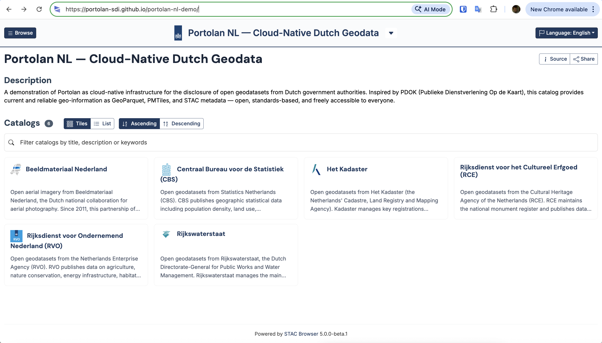
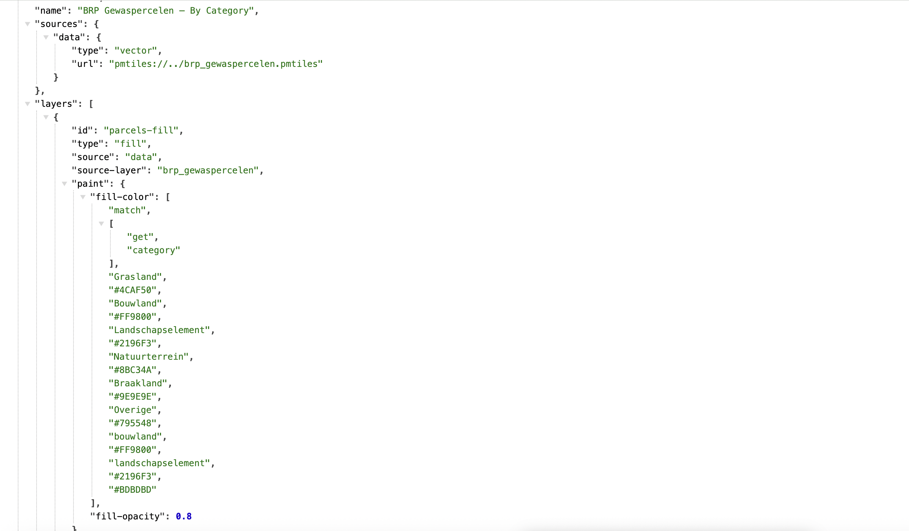
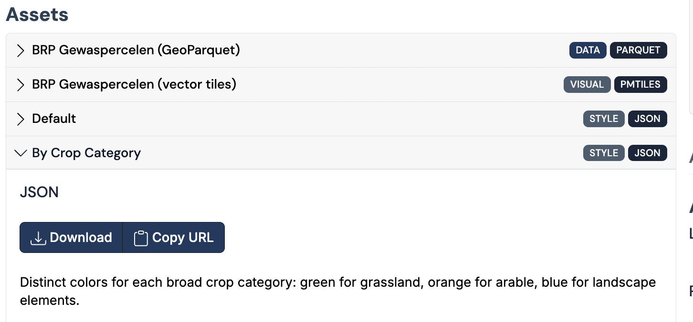
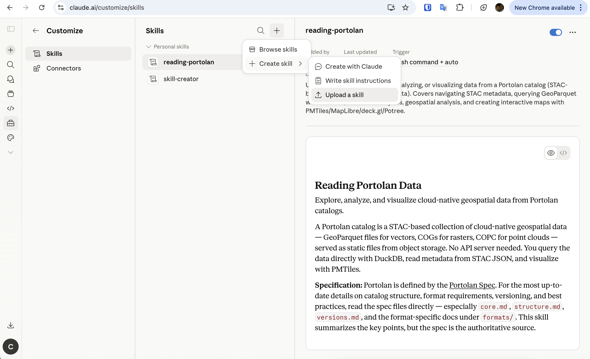
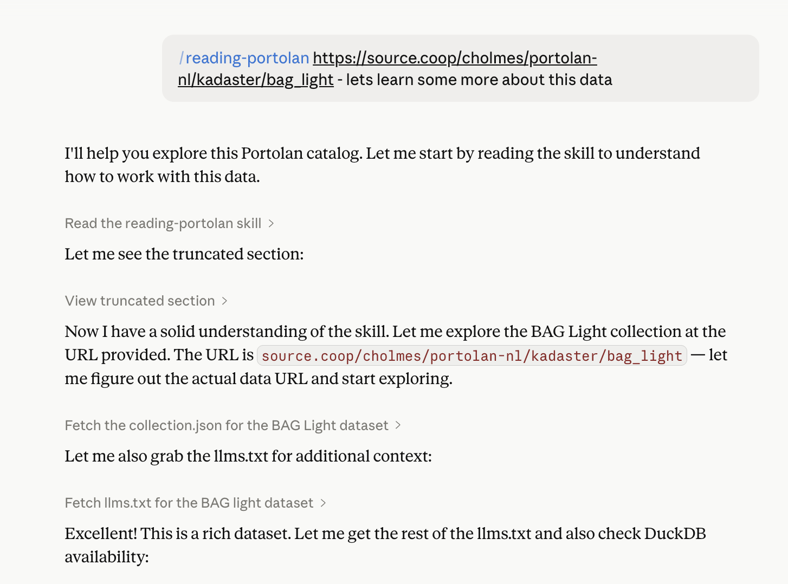
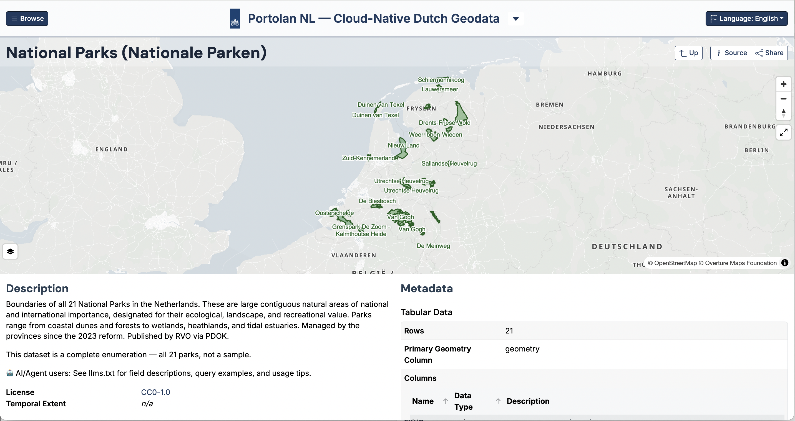

COG
Cloud-Optimized GeoTIFF
Stream raster data for visualization and analysis with just HTTP range requests — no tile server needed.
Still a valid GeoTIFF, so every legacy tool reads it exactly as before.

COPC
Cloud-Optimized Point Cloud
Stream point clouds for visualization and analysis — the COG equivalent for LiDAR data like AHN.
Still a valid .laz file, so it works with all existing LiDAR tools without conversion.

PMTiles
Single-File Map Tile Archive
Packages map tiles into one file for visualization — no tile server needed.
Complements GeoParquet and COG: they handle analysis, PMTiles handles display.

STAC
SpatioTemporal Asset Catalog
Simple JSON format that adds metadata to any cloud-native format.
Search collections and items with STAC API or serverless with STAC-GeoParquet.











